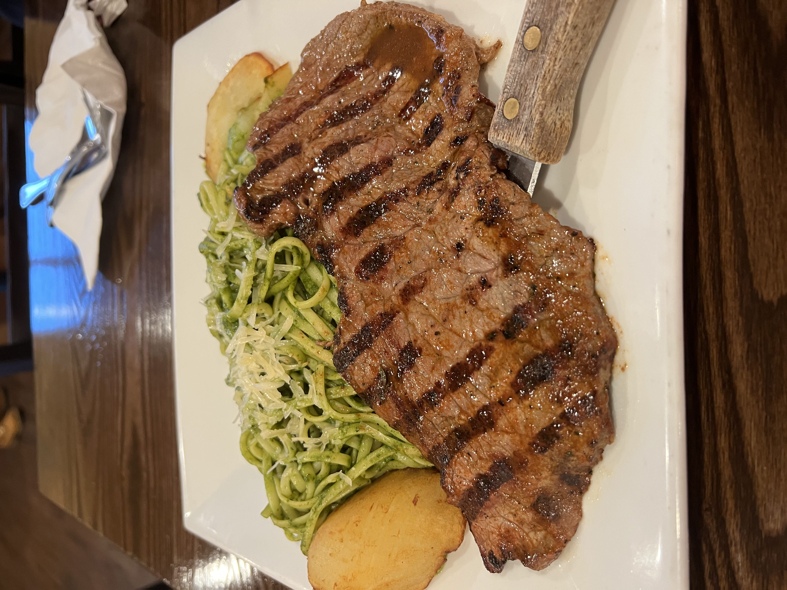

Tallarin Verde Recipe

The foodstuff of my childhood. Meat, pasta, and pesto/cilantro sauce, baby!
Ingredients
- 1 cup of de-leaved spinach
- 1/2 cup of de-leaved basil
- 1/4 cup of oil
- 1/2 can of evaporated milk
- 1 tooth of garlic
- 400 grams of Andean cheese
- 1/2 a red onion (cubed)
- 1/2 kilo of fidellos
- 4 fillets of steak
- Pepper
- Salt
Steps
- Blanquear la espinaca y la albahaca por unos minutos en una olla con agua hirviendo. Retirar de la olla, escurrir y dejar entibiar.
- Colocar la espinaca y la albahaca en el vaso de la licuadora. Agregar el aceite, la leche evaporada, el ajo, el queso y sal al gusto. Si lo deseas puedes agregar en este momento las pecanas o almendras. Licuar y reservar.
- Sofreír la cebolla en una olla grande.
- Agregar a la olla la pasta verde que se obtuvo del licuado. Dejar cocinar unos minutos.
- Añadir los tallarines previamente sancochados y mover bien.
- Llevar una sartén al fuego y agregar un chorro de aceite. Cuando esté caliente, colocar con cuidado el lomo salpimentado y freír. Darle la vuelta y retirar cuando alcance la cocción deseada.
- Servir los tallarines y montar el lomo sobre ellos.